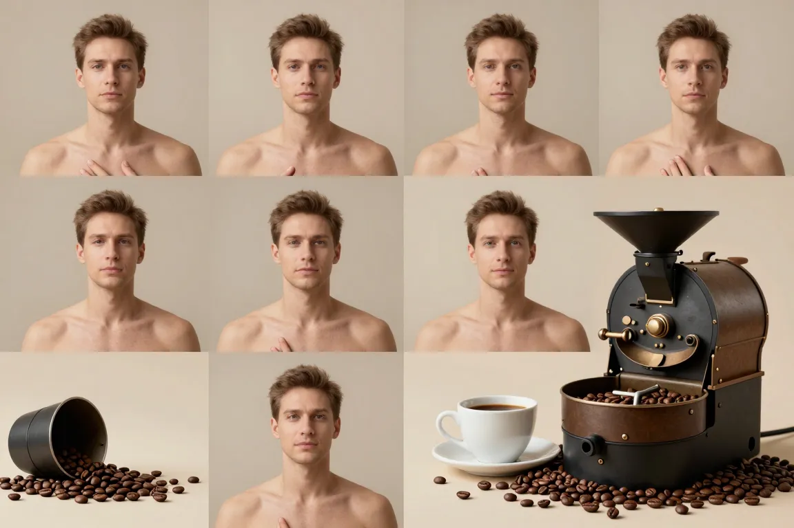

nett · 2018–now · også: StyleGAN-ansikt, This person does not exist, Generert portrettbilde
Et kvadratisk portrett av et menneske som ikke finnes: øynene ligger i fast høyde, bakgrunnen er en myk virvel, og små feil vises i tenner, ører og briller. Det spredte seg fra 2018 med StyleGAN.

Kjerneidé
Et ansikt ingen eier: modellen gjør tusenvis av ansikter om til ett troverdig hode, og feilene er signaturen.
Designprinsipper
Sentrer ett hode på 1024px kvadrat med øyelinjen 40 % fra toppen og øynene 30 % av bredden fra hverandre.
Sett en uskarp, virvlet bakgrunn med 2 til 3 varme fargetoner ved 25 % til 40 % uskarphetsstyrke.
Hold skuldrene i nedre 25 % av utsnittet med et mykt, enkelt plagg.
La én liten feil stå igjen: en feilpasset ørepynt, en uskarp tann eller en lys vanndråpeflekk på 40px til 80px.
Legg ansiktene i et rutenett på 4x4 med fliser på 256px og et mellomrom på 8px for å vise mange genererte hoder samtidig.
Bruk en enkel bildetekst i 14px sans-serif under flisen; legg til ordet generated og seed-nummeret.
Hold paletten naturlig: hudtoner, brun uskarphet og én kjølig bakgrunnstone.